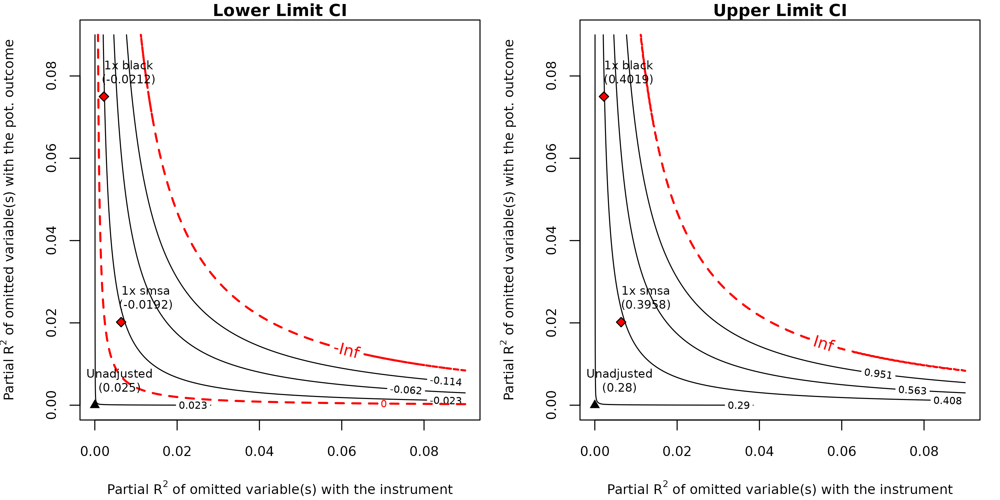
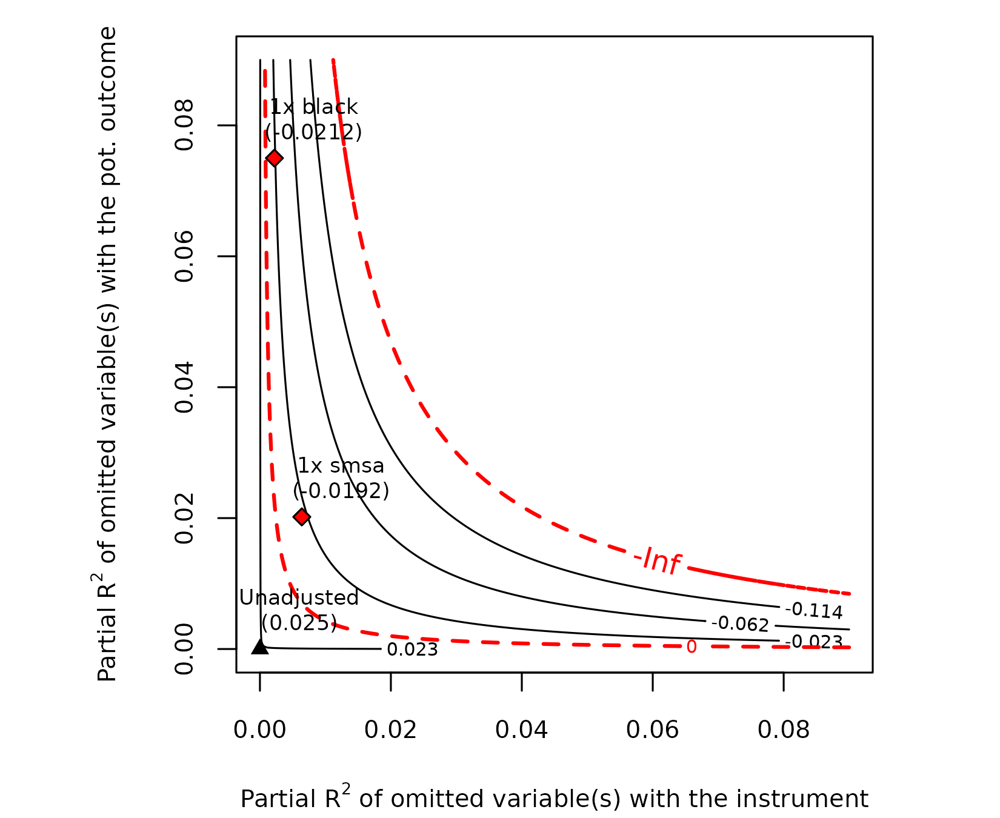
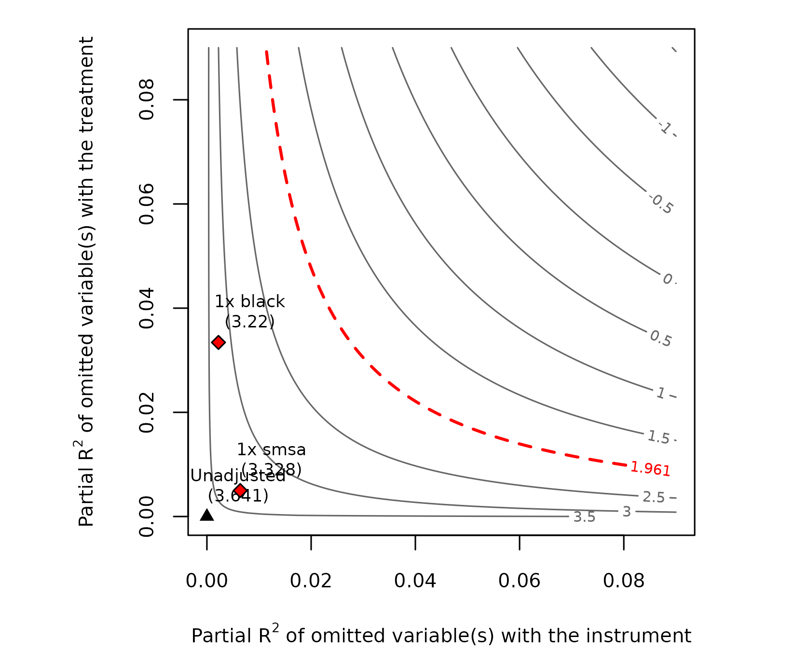
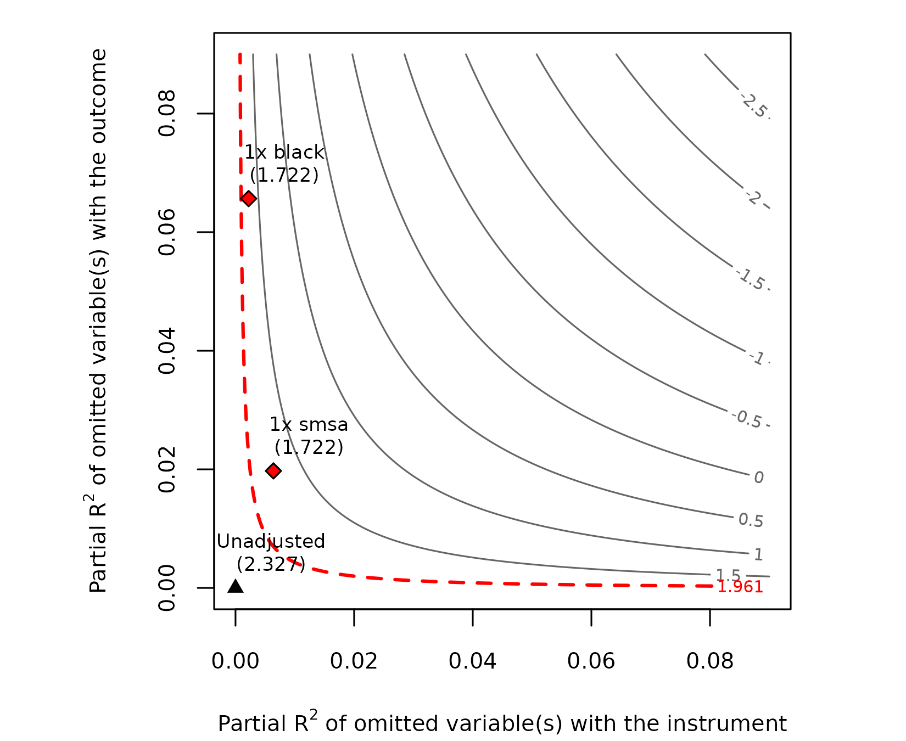

Sensitivity Analysis for Instrumental Variables using `iv.sensemakr`
Carlos Cinelli and Chad Hazlett
2026-02-08
Source:vignettes/iv.sensemakr.Rmd
iv.sensemakr.RmdIntroduction
Instrumental variable (IV) methods are widely used in economics, epidemiology, and the social sciences to estimate causal effects when treatment assignment is confounded. A valid IV approach requires, conditionally on certain observed covariates, that the instrument is not confounded with the outcome, and that it influences the outcome only by affecting uptake of the treatment. In recent literature, the first assumption is usually called exogeneity, ignorability, or unconfoundedness of the instrument, whereas the second assumption is called the exclusion restriction. These assumptions can be violated by omitted confounders of the instrument-outcome association, and by omitted side-effects of the instrument that influence the outcome via paths other than through the treatment.
While these assumptions may sometimes entail testable implications, they are often unverifiable and must be defended by appealing to domain knowledge. Whether a given IV study identifies the causal effect of interest, then, turns on debates as to whether these assumptions hold. More worryingly, if these assumptions fail, the bias of the IV estimate may be worse than the original confounding bias of the naive regression estimate. Therefore, researchers are advised to perform sensitivity analyses to assess the degree of violation required to alter the conclusions of a study.
The package iv.sensemakr implements the sensitivity
analysis framework for IV estimates developed in Cinelli and Hazlett
(2025), building on the omitted variable bias (OVB) tools of Cinelli and Hazlett
(2020). It provides tools to:
- Quantify how strong violations need to be – in the form of side-effects (exclusion restriction violations) or confounders (ignorability violations) – to invalidate the IV findings.
- Use observed covariates as benchmarks for calibrating the plausible strength of such violations.
- Produce contour plots that visualize how the IV confidence interval changes under different assumptions about the strength of omitted variables.
Rather than asking “are the IV assumptions violated?” (which is generally untestable), the framework asks: “how severely would they need to be violated to change the research conclusions?” The answer is given in terms of interpretable partial parameters, making it easy for researchers and reviewers to assess whether the magnitude of violation required is plausible.
The main functions in the package are:
-
iv_fit()– fits an IV model using the Anderson-Rubin (AR) approach; -
sensemakr()– runs a sensitivity analysis on aniv_fitobject; -
plot()/ovb_contour_plot()– produces sensitivity contour plots; -
rv()/xrv()– computes robustness values; -
sensitivity_stats()– computes key sensitivity statistics.
Background and running example
OLS and the omitted variable bias problem
Many observational studies have established a positive association between educational achievement and earnings using regression analysis. Here we consider the work of Card (1995), who employed a sample of individuals from the National Longitudinal Survey of Young Men. In a regression of log wages () on years of education (), adjusting for race, experience, and regional factors (), Card found that each additional year of schooling was associated with approximately 7.5% higher wages. However, educational achievement is not randomly assigned: individuals who obtain more education may have higher wages for other reasons, such as family background, or higher levels of some unobserved characteristic such as Ability or Motivation. Regression estimates that adjust for only a partial list of characteristics may thus suffer from omitted variable bias, likely overestimating the true returns to schooling.
Instrumental variables as a solution
IV methods offer an alternative route to estimate the causal effect of schooling on earnings without having data on those unobserved variables. The key is to find a new variable (the instrument) that changes the incentives to educational achievement, but is associated with earnings only through its effect on education. Card proposed exploiting the role of geographic differences in college accessibility: the variable Proximity encodes whether the individual grew up near a four-year college (). Students who grow up far from the nearest college may face higher educational costs, discouraging them from pursuing higher level studies.
The IV estimate is given by the ratio of two OLS coefficients – one measuring the effect of Proximity on Earnings (the reduced form), and another measuring the effect of Proximity on Education (the first stage):
Fitting the IV model
The card dataset, included in the package, contains data
from the NLSYM with 3,010 observations. The key variables are:
-
lwage: log hourly wage in 1976 (outcome). -
educ: years of completed education (treatment). -
nearc4: indicator for proximity to a four-year college (instrument). - Various covariates:
exper,expersq,black,south,smsa, regional dummies,smsa66.
# load the package
library(iv.sensemakr)
# load the dataset
data("card")The function iv_fit() takes vectors for the outcome
y, treatment d, instrument z, and
an optional covariate matrix x. It computes IV estimates
using the Anderson-Rubin (AR) approach, which is numerically equivalent
to Two-Stage Least Squares (2SLS) for point estimation, but constructs
confidence intervals via test inversion – a procedure with correct
coverage regardless of instrument strength.
# prepare data
y <- card$lwage # outcome: log wage
d <- card$educ # treatment: years of education
z <- card$nearc4 # instrument: proximity to college
x <- model.matrix(~ exper + expersq + black + south + smsa + reg661 +
reg662 + reg663 + reg664 + reg665 + reg666 +
reg667 + reg668 + smsa66,
data = card)
# fit the IV model
card.fit <- iv_fit(y, d, z, x)
card.fit
#>
#> Instrumental Variable Estimation
#> (Anderson-Rubin Approach)
#> =============================================
#> IV Estimates:
#> Coef. Estimate: 0.132
#> t-value: 2.33
#> p-value: 0.02
#> Conf. Interval: [0.025, 0.285]
#> Note: H0 = 0, alpha = 0.05, df = 2994.
#> =============================================
#> See summary for first stage and reduced form.The first-stage coefficient reveals that those who grew up near a college have completed an additional 0.32 years of education, on average. The reduced-form shows that proximity is associated with about 4.2% higher earnings. The IV estimate is then , suggesting that each additional year of schooling raises wages by about 13.2%.
The summary() method displays all three underlying
regressions (IV, first stage, and reduced form):
summary(card.fit)
#>
#> Instrumental Variable Estimation
#> (Anderson-Rubin Approach)
#> =============================================
#> IV Estimates:
#> Coef. Estimate: 0.132
#> t-value: 2.33
#> p-value: 0.02
#> Conf. Interval: [0.025, 0.285]
#> Note: H0 = 0, alpha = 0.05, df = 2994.
#> ---------------------------------------------
#> FS Estimates:
#> Coef. Estimate: 0.32
#> Standard Error: 0.0879
#> t-value: 3.64
#> p-value: 0.000276
#> Conf. Interval: [0.148, 0.492]
#> Note: H0 = 0, alpha = 0.05, df = 2994.
#> ---------------------------------------------
#> RF Estimates:
#> Coef. Estimate: 0.0421
#> Standard Error: 0.0181
#> t-value: 2.33
#> p-value: 0.02
#> Conf. Interval: [0.007, 0.078]
#> Note: H0 = 0, alpha = 0.05, df = 2994.
#> =============================================You can use coef() and confint() to extract
individual components:
The IV estimate may still suffer from omitted variable bias
The IV estimate relies on the assumption that, conditional on , Proximity and Earnings are unconfounded, and the effect of Proximity on Earnings must go entirely through Education. As is often the case, neither assumption is easy to defend. The same factors that might confound the relationship between Education and Earnings could similarly confound the relationship between Proximity and Earnings (e.g., family wealth or connections). Moreover, the presence of a college nearby may be associated with high school quality, which in turn also affects earnings. Finally, geographic factors can make some localities likely to both have colleges nearby and lead to higher earnings – these are only coarsely conditioned on by the observed regional indicators, and residual biases may remain.
Therefore, instead of adjusting for only, we should have adjusted for both the observed covariates and unobserved covariates , where stands for all unobserved factors necessary to make Proximity a valid instrument for the effect of Education on Earnings. The question becomes: how do the IV estimates from the model without compare with the estimates from the model with ?
Sensitivity analysis
The sensitivity parameters
The iv.sensemakr framework parametrizes the strength of
potential side-effects and confounders using two partial
measures:
: the partial of the omitted variable(s) with the instrument , given the observed covariates . This measures how much of the residual variation in the instrument is “explained” by .
: the partial of with the potential outcome , given and . Under a constant treatment effects model, this has a simple interpretation – it stands for how much residual variation confounders or side-effects explain of the untreated potential outcome.
When both of these partial values are zero, the IV assumptions hold and the estimate is valid. As these values increase, the bias grows. The sensitivity analysis asks: for what combinations of these two parameters do the IV results change enough to overturn the research conclusions?
Running sensemakr
The sensemakr() function takes an iv_fit
object and computes sensitivity statistics. Here we show the call with
all parameters made explicit, and then the simplified version using
defaults:
# with all parameters shown explicitly
card.sens <- sensemakr(card.fit,
benchmark_covariates = c("black", "smsa"),
kz = 1, # benchmark multiplier for Z
ky = 1, # benchmark multiplier for Y(0)
q = 1, # reduce estimate to zero
alpha = 0.05, # significance level
min = TRUE) # biases >= q (default)In most cases, the defaults are appropriate:
card.sens <- sensemakr(card.fit, benchmark_covariates = c("black", "smsa"))
card.sens
#>
#> Sensitivity Analysis for Instrumental Variables
#> (Anderson-Rubin Approach)
#> =============================================================
#> IV Estimates:
#> Coef. Estimate: 0.132
#> t-value: 2.33
#> p-value: 0.02
#> Conf. Interval: [0.025, 0.285]
#>
#> Sensitivity Statistics:
#> Extreme Robustness Value: 0.000523
#> Robustness Value: 0.00667
#>
#> Bounds on Omitted Variable Bias:
#> Bound Label R2zw.x R2y0w.zx Lower CI Upper CI Crit. Thr.
#> 1x black 0.00221 0.0750 -0.0212 0.402 2.59
#> 1x smsa 0.00639 0.0202 -0.0192 0.396 2.57
#>
#> Note: H0 = 0, q >= 1, alpha = 0.05, df = 2994.
#> =============================================================
#> See summary for first stage and reduced form.The parameters control:
-
benchmark_covariates: observed covariates used to bound the plausible strength of the omitted variables. Here we use"black"and"smsa"(metropolitan area indicator) as reference points. -
kz,ky,kd: multipliers that scale the benchmark bounds. For instance,kz = 2asks “what if the omitted variable is twice as strongly related to the instrument as the benchmark covariate?” -
q: the fraction of the effect to be explained away. Default is 1 (bring the estimate to zero). -
alpha: significance level for hypothesis tests and confidence intervals. -
min: whenTRUE(default), the robustness value accounts for biases as large or larger than needed, yielding .
Interpreting the results
The output reports sensitivity statistics for the IV estimate: the Extreme Robustness Value (XRV) and the Robustness Value (RV), along with bounds on omitted variable bias for each benchmark covariate.
The Robustness Value (RV) is the minimum partial that confounders or side-effects would need to have with both the instrument and the outcome in order to make the adjusted confidence interval include zero. The larger the RV, the more robust the result.
The Extreme Robustness Value (XRV) describes the minimum strength of association that omitted variables need to have with the instrument alone in order to be problematic (under the worst-case scenario for the association with the outcome).
In the Card example, the RV is about 0.67%, revealing that confounders or side-effects explaining just 0.67% of the residual variation both of Proximity and of (log) Earnings are already sufficient to make the IV estimate statistically insignificant. The XRV is even smaller (about 0.05%), meaning that if we are not willing to impose constraints on the partial with the outcome, omitted variables need only explain 0.05% of the residual variation of the instrument to be problematic.
The full summary, including sensitivity statistics for the
first-stage and reduced-form regressions, is obtained with
summary():
summary(card.sens)
#>
#> Sensitivity Analysis for Instrumental Variables
#> (Anderson-Rubin Approach)
#> =============================================================
#> IV Estimates:
#> Coef. Estimate: 0.132
#> t-value: 2.33
#> p-value: 0.02
#> Conf. Interval: [0.025, 0.285]
#>
#> Sensitivity Statistics:
#> Extreme Robustness Value: 0.000523
#> Robustness Value: 0.00667
#>
#> Bounds on Omitted Variable Bias:
#> Bound Label R2zw.x r2y0w.zx Lower CI Upper CI Crit. Thr.
#> 1x black 0.00221 0.0750 -0.0212 0.402 2.59
#> 1x smsa 0.00639 0.0202 -0.0192 0.396 2.57
#>
#> Note: H0 = 0, q >= 1, alpha = 0.05, df = 2994.
#> -------------------------------------------------------------
#> FS Estimates:
#> Coef. Estimate: 0.32
#> Standard Error: 0.0879
#> t-value: 3.64
#> p-value: 0.000276
#> Conf. Interval: [0.148, 0.492]
#>
#> Sensitivity Statistics:
#> Extreme Robustness Value: 0.00313
#> Robustness Value: 0.0302
#>
#> Bounds on Omitted Variable Bias:
#> Bound Label R2zw.x R2dw.zx Lower CI Upper CI Crit. Thr.
#> 1x black 0.00221 0.03342 0.109 0.531 2.40
#> 1x smsa 0.00639 0.00498 0.120 0.520 2.27
#>
#> Note: H0 = 0, q = 1, alpha = 0.05, df = 2994.
#> -------------------------------------------------------------
#> RF Estimates:
#> Coef. Estimate: 0.0421
#> Standard Error: 0.0181
#> t-value: 2.33
#> p-value: 0.02
#> Conf. Interval: [0.007, 0.078]
#>
#> Sensitivity Statistics:
#> Extreme Robustness Value: 0.000523
#> Robustness Value: 0.00667
#>
#> Bounds on Omitted Variable Bias:
#> Bound Label R2zw.x R2yw.zx Lower CI Upper CI Crit. Thr.
#> 1x black 0.00221 0.0657 -0.00418 0.0883 2.56
#> 1x smsa 0.00639 0.0197 -0.00429 0.0884 2.56
#>
#> Note: H0 = 0, q = 1, alpha = 0.05, df = 2994.
#> =============================================================The RV decomposition
The robustness value for the IV estimate decomposes into two components:
measures the robustness of the “exclusion restriction” component: how strong would omitted variables need to be in order to change inference on the Anderson-Rubin regression?
measures the robustness of the first stage: how strong would omitted variables need to be in order to drive the first-stage coefficient to zero?
The IV robustness value is the minimum of these two. When the first stage is strong ( is large), robustness is driven by . This is the case in our running example, where the binding constraint comes from the reduced form, not from the first-stage strength. You can access these components directly:
# IV robustness value (minimum of the two)
rv(card.fit)
#> iv
#> 0.00667
#> Parameters: q >= 1, alpha = 0.05
# first-stage robustness value
rv(card.fit, parm = "fs")
#> fs
#> 0.0302
#> Parameters: q = 1, alpha = 0.05, invert = FALSE
# reduced-form robustness value
rv(card.fit, parm = "rf")
#> rf
#> 0.00667
#> Parameters: q = 1, alpha = 0.05, invert = FALSEThe sensitivity_stats() function provides a summary
table including both the RV and XRV alongside the estimates and
confidence intervals:
sensitivity_stats(card.fit)
#> estimate lwr upr t.value xrv_qa rv_qa q min alpha
#> iv 0.1315038 0.02480484 0.2848236 2.327075 0.0005232443 0.006666407 1 1 0.05
#> dof
#> iv 2994
sensitivity_stats(card.fit, parm = "fs")
#> estimate lwr upr t.value xrv_qa rv_qa q min alpha
#> fs 0.3198989 0.1476194 0.4921785 3.64085 0.003129076 0.03023129 1 1 0.05
#> dof
#> fs 2994
sensitivity_stats(card.fit, parm = "rf")
#> estimate lwr upr t.value xrv_qa rv_qa q min
#> rf 0.04206794 0.006622162 0.07751371 2.327075 0.0005232443 0.006666407 1 1
#> alpha dof
#> rf 0.05 2994Note that the (extreme) robustness value of the IV estimate required to bring the lower limit of the confidence interval to zero or below is the minimum of the (extreme) robustness value of the reduced form and the (extreme) robustness value of the first stage evaluated at the zero null. In our running example, the reduced form is more fragile, thus the sensitivity of the IV hinges critically on the sensitivity of the reduced form.
Sensitivity contour plots
It is often valuable to assess the sensitivity of the IV estimate against hypotheses other than zero. Contour plots show the whole range of adjusted lower and upper limits of the Anderson-Rubin confidence interval against various strengths of the omitted variables .
plot(card.sens, lim = 0.09)
Each contour plot shows:
- x-axis: hypothetical bounds on .
- y-axis: hypothetical bounds on .
- Contour lines: levels of the worst-case adjusted CI bound.
- Red dashed line: the critical threshold (zero), as well as the boundary beyond which confidence intervals become unbounded.
- Labeled points: benchmark bounds, showing where observed covariates fall on this plot.
The point labeled “Unadjusted” at the origin represents the original estimate (no violation of the IV assumptions). As we move away from the origin (stronger omitted variables), the confidence interval widens.
You can also produce individual plots for specific aspects of the sensitivity analysis:
# lower limit of the CI
ovb_contour_plot(card.fit,
benchmark_covariates = c("black", "smsa"),
sensitivity.of = "lwr",
lim = 0.09)
# upper limit of the CI
ovb_contour_plot(card.fit,
benchmark_covariates = c("black", "smsa"),
sensitivity.of = "upr",
lim = 0.09)
The t-value contour plot shows how the Anderson-Rubin test statistic changes:
# t-value contour plot
ovb_contour_plot(card.fit,
benchmark_covariates = c("black", "smsa"),
sensitivity.of = "t-value",
lim = 0.09)First-stage and reduced-form sensitivity
The sensitivity of the auxiliary regressions can also be assessed. The first-stage sensitivity shows how robust the instrument relevance condition is:
ovb_contour_plot(card.fit,
benchmark_covariates = c("black", "smsa"),
sensitivity.of = "t-value",
parm = "fs",
lim = 0.09)
ovb_contour_plot(card.fit,
benchmark_covariates = c("black", "smsa"),
sensitivity.of = "t-value",
parm = "rf",
lim = 0.09)
Benchmarking and bounds
Using observed covariates as benchmarks
A central feature of the framework is the use of observed covariates
as benchmarks for assessing the plausible strength of
omitted variables. The benchmark bounds are computed by
sensemakr() and reported alongside the sensitivity
statistics:
card.sens$bounds$iv
#> bound_label r2zw.x r2y0w.zx lwr upr t.dagger
#> 1 1x black 0.002214715 0.07499929 -0.02121559 0.4019120 2.594187
#> 2 1x smsa 0.006394072 0.02018201 -0.01923060 0.3957506 2.571007Each row shows:
-
Bound Label: the benchmark covariate and multiplier
(e.g.,
1x smsameans “as strong as SMSA”). - R2zw.x: the partial bound for the omitted variable’s association with the instrument.
- R2y0w.zx: the partial bound for the omitted variable’s association with the potential outcome.
- Lower CI / Upper CI: the adjusted confidence interval under this bound.
- Crit. Thr.: the bias-adjusted critical value.
In the Card example, confounding as strong as SMSA (an indicator for metropolitan area, with and ) produces a bias-adjusted critical value of approximately 2.55. Since the observed t-value (2.33) is less than this adjusted threshold, this immediately reveals that confounding as strong as SMSA – e.g., residual geographic confounding – is already sufficiently strong to be problematic.
As the contour plots reveal, both confounding as strong as SMSA or as strong as Black could lead to a confidence interval that includes not only implausibly high values, but also negative values, and is thus too wide for any meaningful conclusions. Since it is not very difficult to imagine residual confounders as strong or stronger than those (e.g., parental income, finer-grained geographic location, etc.), these results call into question the strength of evidence provided by this study.
Scaling the benchmarks
You can use the multiplier arguments kz and
ky to consider omitted variables stronger than the
benchmark:
# what if omitted variables are twice as strong as the benchmarks?
card.2x <- sensemakr(card.fit,
benchmark_covariates = c("black", "smsa"),
kz = 2,
ky = 2)
card.2x$bounds$iv
#> bound_label r2zw.x r2y0w.zx lwr upr t.dagger
#> 1 2x black 0.00442943 0.15000005 -0.09557196 0.7750155 3.225593
#> 2 2x smsa 0.01278814 0.04036735 -0.08882547 0.7236338 3.184735Manual bounds
You can also provide specific hypothetical partial values directly:
card.manual <- sensemakr(card.fit,
benchmark_covariates = c("black", "smsa"),
r2zw.x = 0.02,
r2y0w.zx = 0.02,
bound_label = "Manual (2%)")
card.manual
#>
#> Sensitivity Analysis for Instrumental Variables
#> (Anderson-Rubin Approach)
#> =============================================================
#> IV Estimates:
#> Coef. Estimate: 0.132
#> t-value: 2.33
#> p-value: 0.02
#> Conf. Interval: [0.025, 0.285]
#>
#> Sensitivity Statistics:
#> Extreme Robustness Value: 0.000523
#> Robustness Value: 0.00667
#>
#> Bounds on Omitted Variable Bias:
#> Bound Label R2zw.x R2y0w.zx Lower CI Upper CI Crit. Thr.
#> Manual (2%) 0.02000 0.0200 -0.0715 0.613 3.07
#> 1x black 0.00221 0.0750 -0.0212 0.402 2.59
#> 1x smsa 0.00639 0.0202 -0.0192 0.396 2.57
#>
#> Note: H0 = 0, q >= 1, alpha = 0.05, df = 2994.
#> =============================================================
#> See summary for first stage and reduced form.The manual bound appears alongside the benchmark-based bounds. You can specify different values for and if you believe the omitted variable is more strongly related to one than the other.
Discussion
The sensitivity analysis tools in iv.sensemakr provide
logical deductions aimed at: (i) revealing the consequences of varying
degrees of violation of the IV assumptions (e.g., via bias-adjusted
critical values), and (ii) determining the minimal degree of violation
necessary to overturn certain conclusions (e.g., via robustness values).
This shifts the scientific debate from arguing whether latent
confounders or side-effects of an instrument have exactly zero strength
– an indefensible claim in most settings – to a more realistic
discussion about whether we can confidently rule out strengths that are
shown to be problematic.
The results of sensitivity analyses are not always self-evident and can often be surprising. They may reveal that certain studies are highly sensitive to plausible perturbations of the IV assumptions, while others remain robust despite such perturbations. In our running example, the sensitivity analysis reveals that the returns-to-schooling IV estimate, while statistically significant, can be overturned by confounders as strong as covariates already observed in the data (such as metropolitan area status or race). This calls for careful discussion about whether such residual confounding is plausible.
It is important to note that plausibility judgments inevitably depend on expert knowledge and can vary substantially across scientific disciplines and the quality of the research design. In an observational study without randomization or a rich set of measured confounders, it would be hard to rule out latent confounders explaining 1% of the residual variation of the instrument. This seems to be the case in the Card example, where residual geographic confounders could plausibly attain such strength. In other contexts, however, a value of 1% may be large – for instance, in a Mendelian randomization study where the main concern is pleiotropy.
It is also important to emphasize that sensitivity to unobserved variables is distinct from the “weak instruments” problem. The latter depends on sample size, whereas the former does not. Instruments deemed “strong” by conventional statistics (e.g., large F-statistics) may still be fragile in the face of unobserved variables that violate the IV assumptions.
Going further
This vignette covered the core workflow. For additional features and details:
- Adjusting
qandalphato explore different hypothesis testing scenarios. - Asymmetric multipliers (
kzky) for non-equal benchmark scaling. - Inspecting the first-stage and reduced-form bounds
(
card.sens$bounds$fs,card.sens$bounds$rf). - The methodological foundations in Cinelli and Hazlett (2025).
See the package documentation (?sensemakr,
?iv_fit, ?ovb_contour_plot) for the full set
of options and examples.
References
Anderson, T.W. and Rubin, H. (1949), “Estimation of the parameters of a single equation in a complete system of stochastic equations,” Annals of Mathematical Statistics, 20, 46–63.
Card, D. (1995), “Using geographic variation in college proximity to estimate the return to schooling,” in Aspects of Labour Market Behaviour: Essays in Honour of John Vanderkamp.
Cinelli, C. and Hazlett, C. (2020), “Making Sense of Sensitivity: Extending Omitted Variable Bias,” Journal of the Royal Statistical Society, Series B (Statistical Methodology). doi:10.1111/rssb.12348.
Cinelli, C. and Hazlett, C. (2025), “An Omitted Variable Bias Framework for Sensitivity Analysis of Instrumental Variables,” Biometrika. doi:10.1093/biomet/asaf004.